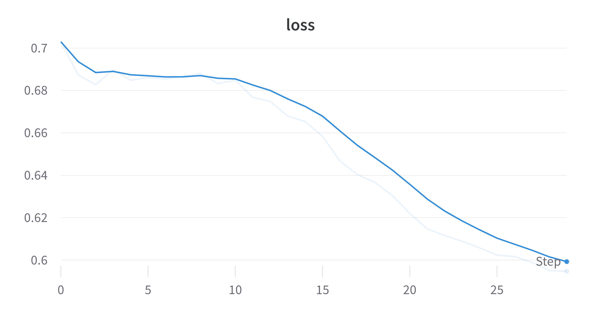
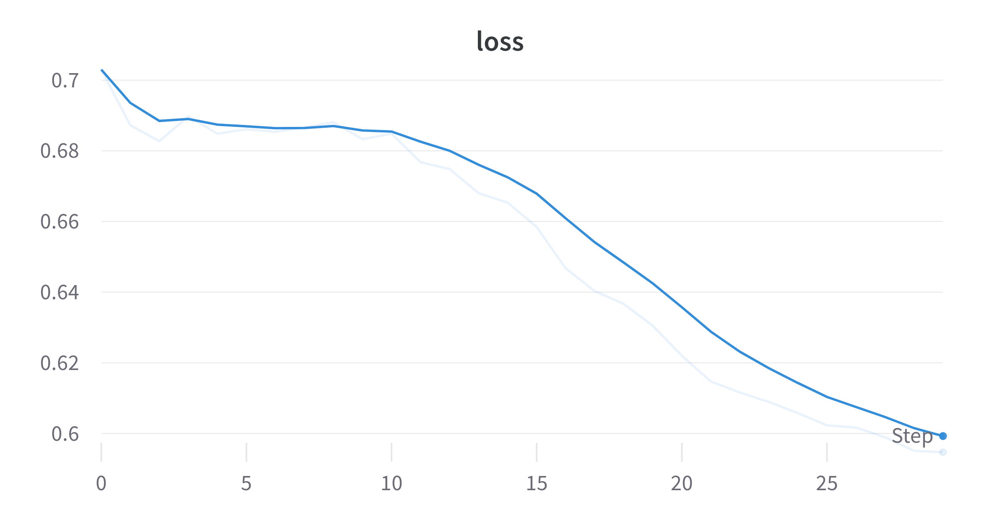
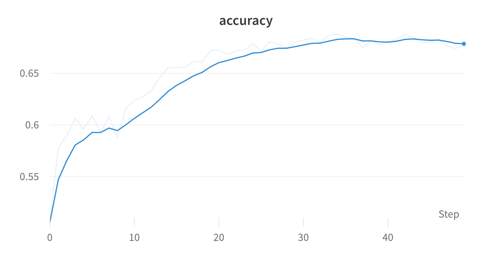
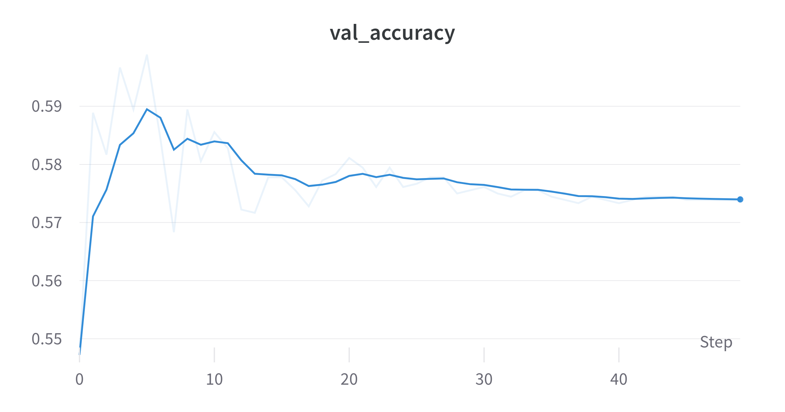
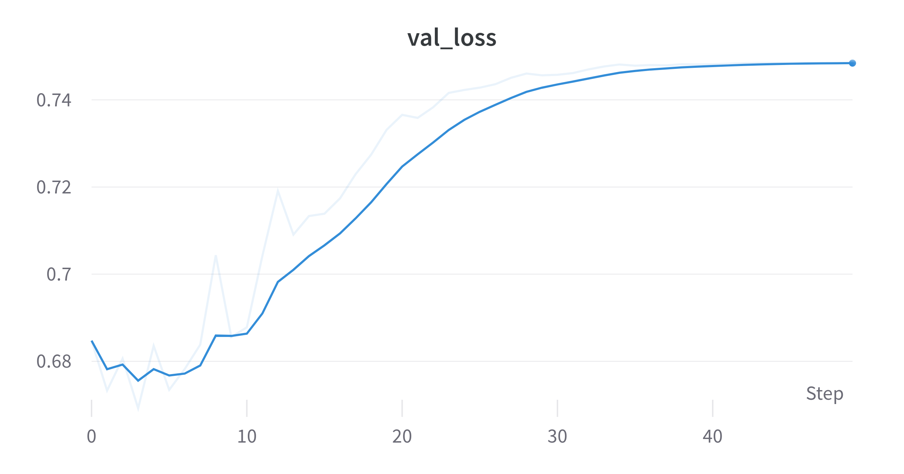
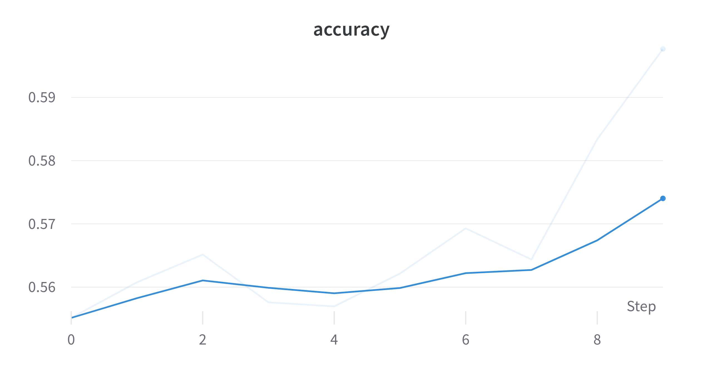
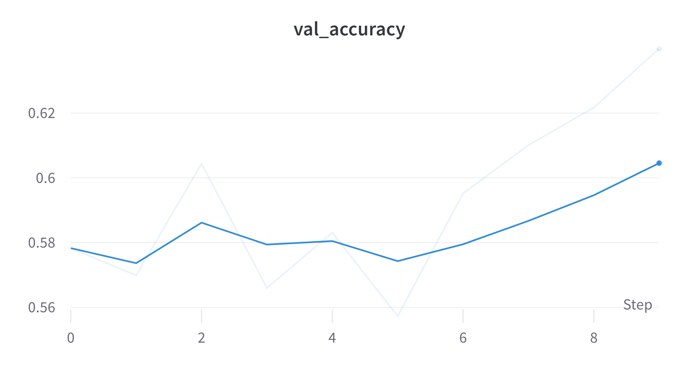
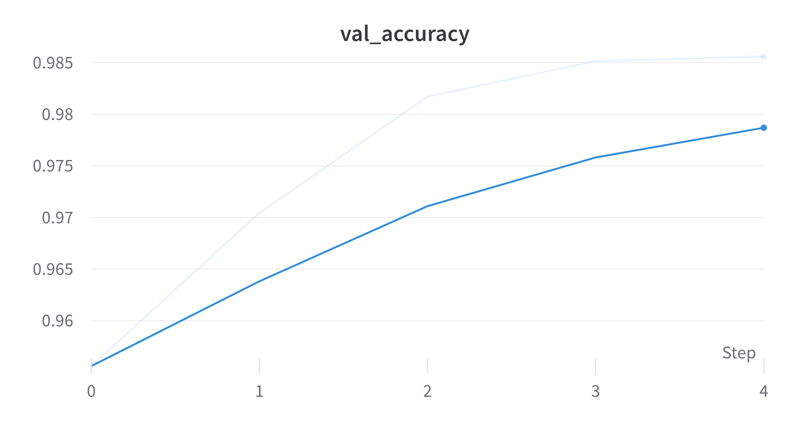
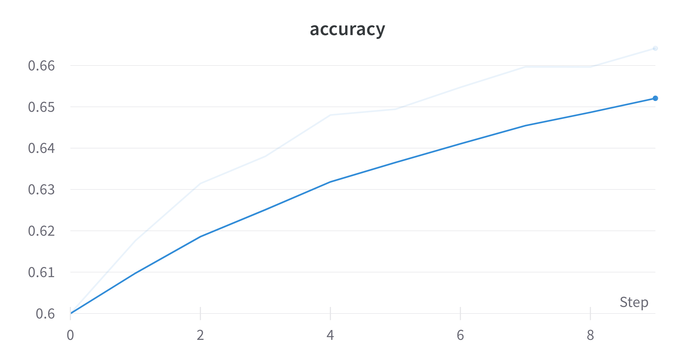
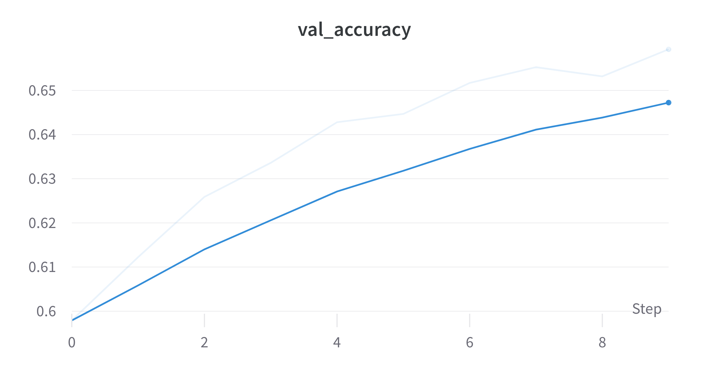

Couples Retreat
revealOptions: transition: ‘fade’ transitionSpeed: ‘fast’ width: 1400 —
Results on EP dataset with QCNN Hybrid
10k samples - 2 QConv2D Layers - 2 qubits per layer - 1 Dropout between FC layers
train acc: 0.6515 | val\_acc: 0.5522
 



10k samples - 1 QConv2D Layer - 2 qubits - Kernel (2,2)
train acc: 0.6772 | val\_acc: 0.5738




100k samples - 1 QConv2D Layer - 2 qubits - 10 epochs only
train acc: 0.5976 | val\_acc: 0.6399




Models with less data (10k) starts to overfit while models with large data (100k) might have some potential but takes quite a time.
Using JAX with pennylane
- Results in huge speedup even on cpu.
- jax.vmap transform to make running batches of circuits much easier.
- vmap essentially transforms a single quantum computer into multiple running in parallel!
Preliminary Results on MNIST
Binary classes: 3 and 6. Center crop to (20,20). Resized to (8,8). Standardized
╒════════╤══════════════════╤═════════════════╤═════════════════╤═══════════╕
│ Data │ Train size │ Val size │ Test size │ Dims │
╞════════╪══════════════════╪═════════════════╪═════════════════╪═══════════╡
│ X │ (10844, 8, 8, 1) │ (1205, 8, 8, 1) │ (1968, 8, 8, 1) │ (8, 8, 1) │
├────────┼──────────────────┼─────────────────┼─────────────────┼───────────┤
│ y │ (10844, 2) │ (1205, 2) │ (1968, 2) │ (2,) │
╘════════╧══════════════════╧═════════════════╧═════════════════╧═══════════╛
╒══════════════╤═══════╤═══════╤════════╤═══════╤══════════════════════════╕
│ Type │ Min │ Max │ Mean │ Std │ Samples for each class │
╞══════════════╪═══════╪═══════╪════════╪═══════╪══════════════════════════╡
│ Train Images │ -1.77 │ 23.08 │ 0 │ 1 │ [5326, 5518] │
├──────────────┼───────┼───────┼────────┼───────┼──────────────────────────┤
│ Val Images │ -1.77 │ 16.33 │ -0 │ 1 │ [592, 613] │
├──────────────┼───────┼───────┼────────┼───────┼──────────────────────────┤
│ Test Images │ -1.77 │ 15.09 │ 0.02 │ 1.01 │ [958, 1010] │
╘══════════════╧═══════╧═══════╧════════╧═══════╧══════════════════════════╛
Model Architecture
Padding: Same - Kernel: (3,3): Strides: (1,1)

Results
1 QConv2D Layer - 1 qubit - 5 epochs only
train acc: 0.9956 | val\_acc: 0.9856




Results on EP
Center crop to (8,8). Standardized
╒════════╤══════════════════╤══════════════════╤══════════════════╤═══════════╕
│ Data │ Train size │ Val size │ Test size │ Dims │
╞════════╪══════════════════╪══════════════════╪══════════════════╪═══════════╡
│ X │ (90000, 8, 8, 1) │ (10000, 8, 8, 1) │ (20000, 8, 8, 1) │ (8, 8, 1) │
├────────┼──────────────────┼──────────────────┼──────────────────┼───────────┤
│ y │ (90000, 2) │ (10000, 2) │ (20000, 2) │ (2,) │
╘════════╧══════════════════╧══════════════════╧══════════════════╧═══════════╛
╒══════════════╤═══════╤════════╤════════╤═══════╤══════════════════════════╕
│ Type │ Min │ Max │ Mean │ Std │ Samples for each class │
╞══════════════╪═══════╪════════╪════════╪═══════╪══════════════════════════╡
│ Train Images │ -2.88 │ 106.87 │ 0 │ 1 │ [45000, 45000] │
├──────────────┼───────┼────────┼────────┼───────┼──────────────────────────┤
│ Val Images │ -2.88 │ 58.46 │ -0 │ 0.99 │ [5000, 5000] │
├──────────────┼───────┼────────┼────────┼───────┼──────────────────────────┤
│ Test Images │ -2.88 │ 64.88 │ -0 │ 0.98 │ [10000, 10000] │
╘══════════════╧═══════╧════════╧════════╧═══════╧══════════════════════════╛
Results
1 QConv2D Layer - 1 qubit - 10 epochs only
train acc: 0.6641 | val acc: 0.6593




Comparing TFQ and JAX for EP
In the same settings on CPU
- TFQ takes roughly 15-20 mins per epoch whereas JAX takes 5-6 seconds.
- The first epoch of JAX took 16s whereas for TFQ its ~18 mins.
Some drawbacks of JAX
- Had to code the Architecture from scratch including NN layers, loss calculation and gradient updation.